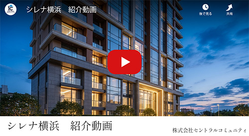

空と海を臨む、横浜の最前席。
リビングの窓越しに広がる街と港。
ここから始まる、家族だけの上質な日常。
「横浜」駅へ2駅・3分、
未来を描く都市「みなとみらい」
現代的な美しさと、贅沢な静けさが調和する場所。
都市の喧騒を遠くに、心地よい暮らしを。
ここから、新しい暮らしが輝き出す。
INFORMATION
-
2025/09/20
モデルルームオープンのお知らせ
CIRENA横浜のモデルルームをオープンいたしました。
上質な空間と眺望を実際にご体感いただけます。 -
2025/09/10
資料請求受付開始
分譲マンションCIRENA横浜の最新資料をオンラインでご請求いただけます。
間取りや共用施設の情報もご覧いただけます。 -
2025/08/30
プロジェクト案内会の開催
本年10月に、CIRENA横浜のプロジェクト案内会を開催予定です。
詳細が決定し次第、メールマガジン及び当ページにてご案内いたします。
プロジェクト案内会開催
資料請求・ご来場予約受付中
※9月第三・第四週は、9/17(水)18(木)を休業日とさせて頂きます。
紹介動画
CIRENAの魅力を3分で体感。
建築美、眺望、共用施設、上質な暮らしを映像でご覧いただけます。
LOCATION
進化を遂げる街の中心、文化と未来が交わる場所
海と街が、家族の暮らしに寄り添う
今も進化を続ける横浜。
多彩な商業と洗練された都市の景観が、日常を彩ります。


徒歩圏に揃う学び・暮らし・健やかさ。
教育・医療・商業・公園といった生活基盤が整うことで、安心感のある日常とともに、
未来へ続く豊かな暮らしを描ける環境が広がっています。
ACCESS
暮らしも仕事も、軽やかに、スムーズに

品川20分
東京40分
渋谷30分
みなとみらい線徒歩5分、都心へもスムーズアクセス
みなとみらい駅から横浜駅へ2駅3分、渋谷駅へ直通30分。
JR線に乗り換えれば品川・東京へもスムーズにアクセス可能です。
さらに東急東横線・東京メトロ副都心線・西武線とも直通運転を行っているため、多方面への移動が快適に叶います。
ARCHITECT
都市と未来を見晴らす、洗練のレジデンス
時を超えて輝くタワーが、暮らしに静けさと開放感をもたらす。
都市の中心で、日々を特別にする住まいです。
静謐と上質が出迎える、私邸の入口
街の喧騒を抜けた先に、住まう人だけの上質なラウンジ。
洗練された空間と、海に広がる眺望が、邸宅ならではの贅沢を演出します。
PLAN
上質なプライベート空間を
洗練されたデザインと最新の技術、細部にまで行き届いたこだわり。
静けさと現代的なエッジが共存する空間で、あなたの新たな物語が始まります。
79.82m2
68.57m2
58.37m2
VALUE
横浜という、不動のブランド
歴史と発展を兼ね備えた横浜エリア。
希少な立地と高層レジデンスの価値が、時を経ても変わらない資産として未来へ受け継がれます。
建築家・デザインスタジオ
「STUDIO LUMINA」代表
髙橋 悠一
東京大学建築学科卒業
パリの建築事務所で5年間研鑽
高層住宅・ラグジュアリーホテルの設計を多数手がける
国内外建築賞受賞歴多数
「日本建築学会賞」受賞
「アジアデザインアワード」金賞受賞
［実績参考写真］
写真左からARCHE VILLA（福岡・天神）、HORIZON RESIDENCE（横浜・中区）光と風を感じる空間が、暮らしに豊かさをもたらす。
建物は単なる住まいではなく、生活の舞台である。
WCH-M Oriented
外気の影響を受けにくい断熱性と、
高効率な設備を導入。
家計や環境に優しい省エネ性を備えたマンション。
WCH-M Oriented（ウィッチ・マンション
オリエンテッド）は、
建物の外皮断熱性能の向上と高効率の省エネ設備等の導入により、
住棟全体で年間の一次エネルギー消費量を25％以上削減することを目指すマンションです。
健やかな毎日
軽やかな家計
未来への配慮
- 掲載の写真はすべて完成予想図です。計画段階の図面を基に描き起こしたもので、実際とは異なります。また、建築オプション・設計変更・インテリアオプション等が含まれております。オプション家具・調度品等は含まれません。
- 計画地の位置を表した光は高さや規模、向きを正確に表すものではありません。また、周辺の環境は将来変わる場合があります。
- 所要時間は通常時の目安です。交通状況や時間帯により異なる場合があります。
- 掲載の外観、エントランスホール完成予想CGは、計画段階の図面を基に描き起こしたもので、形状・色彩・外構・植栽等は実際とは異なります。形状の細部・設備機器・配管等は省略または簡略化しております。今後、行政指導・施工上の理由等により、計画に変更が生じる場合があります。周辺の建物、電柱、電線、ガードレール等は省略・簡略化して表現しています。
- 表示距離は現地から該当施設等までの距離です。また、徒歩分数表示については80mを1分として算出（端数切り上げ）したものです。
- 周辺の店舗・施設・営業時間は変更される場合があります。
- 掲載の情報は2025年9月現在のものです。
- 掲載の図面は、施工上の理由及び改良のため、変更することがございます。
- 掲載の写真・図面・CG等の無断転載を禁じます。
- 上記の文章を含む、すべての情報は架空のものです。当マンションが設立することはありません。